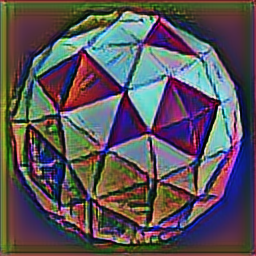
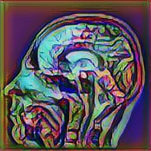
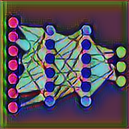

About Me
I am a postdoctoral fellow at the Center for Biomedical Imaging, Department of Radiology, NYU Grossman School of Medicine under the supervision of Dr. Riccardo Lattanzi. I received my PhD degree from the Center for Computational and Data-Intensive Science and Engineering, Skoltech in 2020 under the supervision of Dr. Jacob White. I spend one year as a visiting PhD student at the Research Laboratory of Electronics, MIT during 2018-2019. I received my Diploma degree in Electrical and Computer Engineering from AUTh in 2016. I grew up in Athens and attended high school at the Arsakeia-Tositseia Schools of Psychiko. I am the recipient of the 2023 Harold A. Wheeler Prize Paper Award from the IEEE Transactions on Antennas and Propagation Society and the 2023 Outstanding Postdoctoral Scholar Award from NYU Grossman School of Medicine. I am also a National Institutes of Health K99 Fellow and a Junior Fellow of the International Society for Magnetic Resonance in Medicine.
Research Interests
I perform research in computational and learning-based methods for biomedical imaging and bioengineering applications. My primary research revolves around computational electromagnetics with an emphasis on integral equation methods targeting radiofrequency coil modeling for multiple MRI applications. I am interested in inverse methods for electrical property mapping and MRI image reconstruction. Finally, I find projects involving numerical linear algebra and/or deep learning exciting.
Grants
Honors and Awards
Journal Publicatios
Open-Source Repositories
Research Projects
Teaching Interests
I enjoy teaching topics at the intersection of physics, engineering, and machine learning for biomedical imaging and bioengineering.

Computational Prototyping
As a PhD student at Skoltech, I had the opportunity to serve as a teaching assistant for Dr. Alexander Shapeev's course, Computational Science and Engineering II. The course focused on methods for modeling, simulating, and discretizing physical systems. In particular, the lectures covered a wide range of topics, including partial differential equations, integral equations, quadrature integration, finite difference methods, finite element methods, finite volume methods, optimization strategies, spectral methods, hyperbolic problems, and model order reduction.

MRI Image Reconstruction
As a postdoctoral fellow at NYU Langone Health, I served as an instructor for the Practical Magnetic Resonance Imaging II course led by Dr. Patricia Johnson. The course provided a hands-on introduction to common parallel MRI image reconstruction methods (SMASH, SENSE, GRAPPA) and compressed sensing. My role was to update the curriculum to incorporate state-of-the-art machine learning techniques for image reconstruction, particularly unrolled models that learn only the regularizer within the reconstruction process.

Machine Learning
As a postdoctoral fellow at NYU Langone Health and a machine learning enthusiast, I co-advise (with Dr. Artie Shen) a one-year Captsone Project focusing on latent diffusion models for MRI image reconstruction. I also co-supervise undergraduate students on semester projects focusing on conformal prediction, and neural network compression.
Thesis Mentoring
I have co-advised five graduate students on their PhD theses, focusing on computational electromagnetics, computational geometry, and machine learning for medical imagingg. Through mentorship, much like I received from my own mentors, I aim to inspire curiosity and instill a lasting appreciation for learning.
Curriculum Vitae
Interests and Hobbies
Traveling and Art are my major inspirations.
I admire the works of Nikos Kazantzakis and Pablo Picasso, both of whom challenge convention in ways that inspire me to approach research with adaptability and fresh perspectives.
Contact
Reach me at:
Address
660 1st Av, 4th fl, 460, New York, NY 10016
ilias.giannakopoulos@nyulangone.org